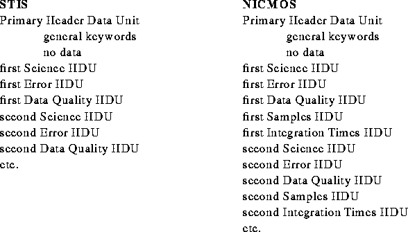

While a detailed discussion of STIS and NICMOS instrument data is beyond the scope of this paper, we can present the general structure of the associated science data. The science data files utilize FITS image extensions (Ponz, 1994). Data from both instruments may be represented as sequences of FITS Header-Data-Units (HDUs) containing two-dimensional arrays. These HDUs are grouped as an array of science data, together with a data quality array and an error array, representing, respectively, an array of boolean conditions that identify various possible anomalous conditions that may be associated with each pixel and the error associated with each pixel. In addition, NICMOS has two additional arrays, an array identifying the number of samples associated with each pixel and an array identifying the integration time associated with each pixel. The structure of the FITS file for both instruments is shown below.
